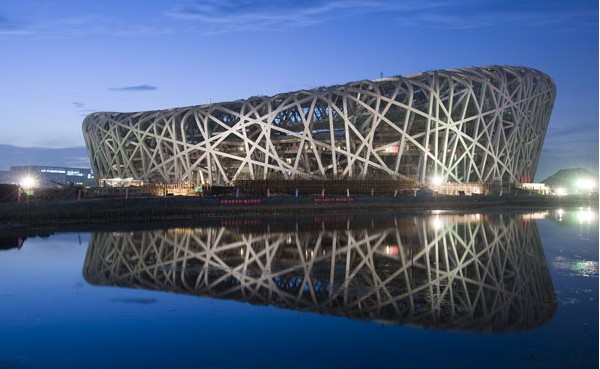
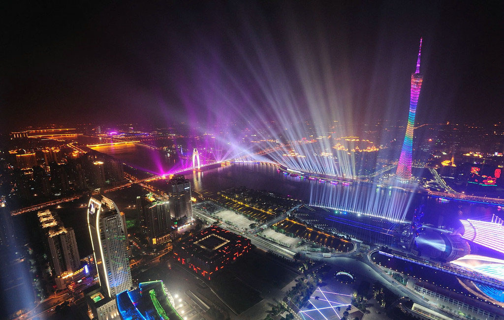
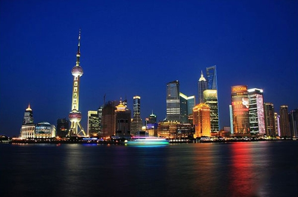
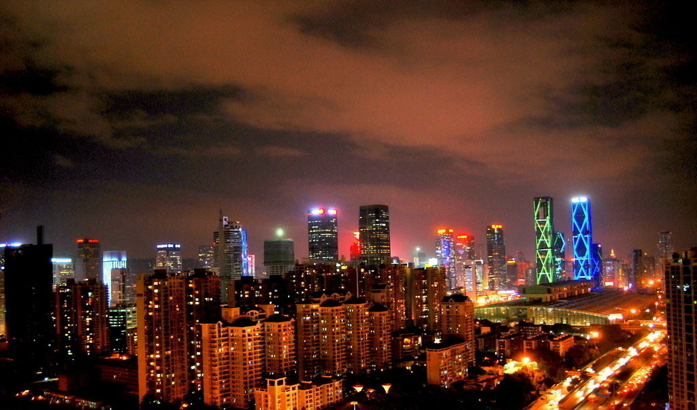

喜欢的四大城市

北京
北京，中华人民共和国首都、直辖市和国家中心城市，中国的政治中心、文化中心，是世界著名古都和现代化国际大都市。[1]中华人民共和国中央人民政府和全国人民代表大会所在地。位于华北平原的东北边缘，背靠燕山，有永定河流经老城西南，毗邻天津市、河北省。

广州
广州，简称穗，地处广东中南部，珠江三角洲中北缘，是中国的南大门，中国国家中心城市，国际大都市，国家三大综合性门户城市之一，世界著名的港口城市，国家的经济、金融、贸易、航运和会展中心，中国南方的政治、军事、文化、科教中心，国家综合交通枢纽，社会经济文化辐射力直指东南亚。

上海
上海（Shanghai），简称"沪"或"申"，中国第一大城市，中华人民共和国直辖市之一，中国国家中心城市，繁荣的国际大都市。上海地处长江入海口，东向东海，隔海与日本九州岛相望。上海拥有深厚的近代城市文化底蕴和众多历史古迹，江南的吴越传统文化与各地移民带入的多样文化相融合，形成了特有的海派文化。

深圳
深圳（shenzhen）中华人民共和国副省级城市之一，计划单列市，全国文明城市，国际花园城市，是中国四大一线城市之一，国际重要的空海枢纽和外贸口岸。
深圳是中国改革开放以来所设立的第一个经济特区，是中国改革开放的窗口，已发展为有相当影响力的国际化城市，创造了举世瞩目的"深圳速度"，是中国重要的高新技术研发和制造基地。
喜欢的四大城市